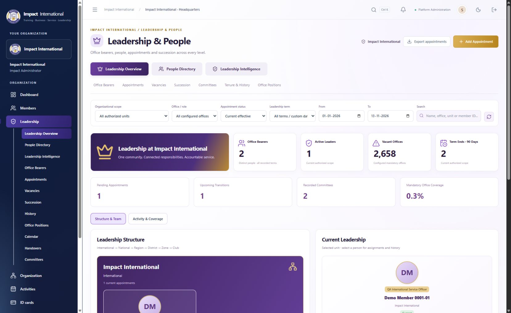

Leadership & People Management Center
Impact International · Delivery verified 13 November 2026
Three distinct workspaces now share the existing central person, hierarchy and governance records: Leadership Overview, People Directory and Leadership Intelligence. The primary business rule remains one central person with multiple independent appointments.
Delivered experience
| Workspace | Behavior |
|---|
| Overview | International → National → Region → District → Zone → Club using actual parent IDs. Selected-unit teams, child-unit drill-down, current leaders, pending proposals, vacancies, term expiry, committees and coverage. Structure/team and activity/coverage use separate compact sections. |
| Directory | Server-paginated 20-person list/cards, real photos or initials, name/member-ID/office search, scope/term/membership filters, sorting, locally saved filter views and authorized current-page CSV. Profile popup includes overview, assignments, history, memberships, committees and permission-filtered contacts. Existing full member record remains linked. |
| Intelligence | Actual hierarchy sunburst, recorded term-start/end trend, office distribution, mandatory-office coverage, geographic counts, committee participation, vacancy and succession details. Four compact analysis sections. Current visible charts export to SVG when authorized. |
| Operational subpages | Office bearers, appointments, vacancies, succession, committees, tenure/history and configurable office positions. Existing calendar, handovers, governance approval and removal remain available. |
| Appointment wizard | Eight steps: existing person, authorized unit, applicable office, term/dates/method, responsibilities/context, supporting document, review and approval. Required validation, back/next retention, discard confirmation and duplicate-submit protection. If governance submission fails after creation, retry uses the saved proposal instead of creating another appointment. |
| Vacancy and succession | Reason, priority, expected filling date and responsible authority are audited and protected against stale updates. Nominate into the exact unit/office. Future successor proposals are distinguished from effective appointments; same-person reappointment preserves identity and history. |
Existing data reused
| Tables / services | Use |
|---|
| Persons, PersonContacts, PersonAddresses, PersonPrivacy, Memberships, MembershipCategories | Central identity, affiliations, existing profile masking and photos. No person record created per office. |
| Orgs, Levels, Assignments, Roles and existing grant evaluation | Single Impact International organization; existing authorized hierarchy IDs and role scope. |
| OfficerPositions, OfficerAppointments, OfficerAppointmentHistory, LeadershipTerms | Configured offices, capacity, terms, lifecycle and preserved historical snapshots. |
| LeadershipHandovers and existing checklists | Controlled transfer of responsibilities to a different actual successor. |
| Committees, CommitteeRoles, CommitteeMemberships, CommitteeActivities | Existing formation, approvals, responsibilities, participation and central people. |
| GovernanceRequests, GovernanceDocuments, MembershipDocuments | Approval decisions and existing supporting-document workflows. |
| OrganizationSettings, Audits, Mails | Namespaced vacancy follow-up metadata, change/private-access/export audit and existing notification outbox. |
No new tables, migrations or duplicate identity stores. No existing person or appointment fields removed. Responsibilities and appointment context use existing Notes. Historical rows prefer stored office/organization snapshots.
APIs
All paths below are under /api/v1.
| New endpoint | Purpose |
|---|
| GET /leadership/center | Scoped live summary, hierarchy, paginated appointment rows, trends, vacancies and succession. Supports scope, office, status, search, term, page and reporting dates. |
| GET /leadership/people | Distinct central people, server-side pagination and privacy-filtered search/contact projection. |
GET /leadership/people/{id}
GET /leadership/people/{id}/photo | Authorized existing profile, appointments, affiliations, committees, history and privacy-controlled uploaded photo. |
PUT /leadership/vacancies/{orgId}/{positionId}
GET /leadership/vacancies/{orgId}/{positionId}/history | Validated filling plans, optimistic conflict protection and audit history. |
| POST /leadership/reminders | Manual term-expiry notification queue, linked-user recipients, transactional preferences and per-appointment/user/UTC-day deduplication. |
GET /leadership/export
GET /leadership/people/export | Audited, formula-safe authorized appointment CSV and explicitly current-page directory CSV. |
Reused API families: /officer-appointments creation/details/history/removal, /officer-positions, /leadership-terms, existing governance submission/independent decisions, handovers, committees, member profiles and document uploads. The wizard uses the existing creation and governance submission endpoints.
Permissions and metric definitions
All reads intersect tenant, assigned workspace and actual visible hierarchy. Foreign scope IDs return 404; ordinary member workspaces without leadership.view are rejected. Predefined national/regional/district/zonal/club president role configuration now includes leadership.view, matching the existing international president capability. This grants scoped leadership reads; it does not grant management, private contact or export rights.
Personal/contact/professional/photo fields retain existing privacy rules. Authorized non-self personal/contact profile access is audited. Private contacts cannot be searched or exported by a reader lacking contact rights. Managing proposals remains subject to leadership.manage and existing governance rules. Export requires members.export or governance.reports; SVG follows the same capability. Reminders require both leadership.manage and communications.send.
- Office bearers and active leaders count distinct people; appointments count office assignments. Multiple offices never inflate the person count.
- Current appointment eligibility reuses GovernanceService.Current: status/effective dates, active organization and linked membership eligibility.
- A mandatory configured position needs one holder. MaximumHolders is capacity, not a number of mandatory vacancies.
- Vacancy age is unknown when no previous ending is recorded. No invented vacancy dates.
- Coverage is live current coverage. Date comparisons use recorded creation periods; trend charts show recorded term starts/ends, not reconstructed activation events.
- Future proposals and approved/scheduled transitions are separate from current leaders. Reappointment may provide continuity; existing handover rules require a different person.
Files
| New components / sources | Responsibility |
|---|
client/src/pages/LeadershipCenter.tsx
client/src/pages/LeadershipCenter.css | Three workspaces, subpages, responsive profiles, filters and actions. |
| client/src/pages/LeadershipAppointmentWizard.tsx | Existing-person appointment proposal wizard. |
| client/src/pages/LeadershipCharts.tsx | D3 distribution, term trend and coverage charts. |
| server/LeadershipCenter.cs | Scoped read APIs, profile composition, vacancy metadata, reminders and exports. |
tests/leadership_center_checks.py
tests/leadership_linked_workflows.py | Repeatable isolated QA API and linked-governance checks. |
Modified integration files: client/src/App.tsx, client/src/navigation.ts, client/src/pages/GovernanceLeadership.tsx, server/Program.cs and server/LeaderCommunications.cs. Existing organization hierarchy charts and member/governance components are reused. Shared PageSections integration from concurrent workspace work is preserved; unrelated finance and page changes are not part of this delivery claim.
Verification
145/145 API/workflow checks passed: 132 core checks plus 13 latest linked-workflow checks. 30/30 browser checks passed. Production frontend build, focused leadership lint and backend build passed. Browser QA used port 1234 against the dedicated QA database, not the main data.
Coverage includes six-level multiple appointments for one person, stable person count, independent approval and self-approval rejection, future reappointment, acting office, conflict/date/method validation, vacancies and stale updates, term filtering, committees with the same central person, private field/photo masking, scoped president logins, foreign IDs, anonymous rejection, reminders and deduplication, audited CSV/SVG, wizard review/pending approval and mobile filter behavior.
Browser-created proposal remains Pending approval; it did not automatically gain authority. Fixtures and privacy canaries are confined to clubs_impact_dues_upgrade_20261113; performance fixtures use clubs_impact_members_perf_20261113. Main business data was not populated with these fixtures.
Evidence: core API results · linked workflows · browser scenarios · performance measurements. Downloaded SVG parsed as XML; downloaded directory CSV parsed successfully.
Performance and explicit limits
The isolated performance database has 103,136 people, 2,625 clubs and 2,782 hierarchy units. Local directory first page: 317.5 ms, page 100: 1,115.8 ms, search: 374.3 ms. Summary: 668.0 ms first request and 242.1 ms repeated request with approximately 868 KB of unit metadata. This database has no officer appointments: these measurements verify large people/hierarchy handling, not large appointment volumes. They are local observations, not production guarantees; no new cache or indexes were introduced.
- Directory pages contain 20 people. Directory CSV intentionally exports the current page; appointment CSV is bounded at 10,000 rows.
- Inline person summaries show up to 8 memberships/10 offices; profile returns up to 200 appointments and 100 committee/history rows. Existing full member/workflow pages remain available.
- Summary scope guard is 15,000 organizations and appointment guard 100,000 records, checked after retrieval. Large summary payloads and deep offset pagination remain scalability limitations.
- Hierarchy metadata is scoped but fetched together; diagram rendering is bounded to 500 nodes and three levels with drill-down. This is bounded progressive rendering, not fully lazy-loaded server hierarchy retrieval. Scope selector lists up to 1,000 units.
- Upcoming/succession response detail is capped at 100 rows while summary calculations cover all loaded eligible records.
- Reminders are manual, up to 100 linked-user recipients per request. No new automatic recurring scheduler. Real email delivery depends on configured SES/SMTP; WhatsApp delivery remains pending the API supplied by the user.
- Documents, awards, broader activity and communication history remain in existing linked member/modules; they are not duplicated in the popup. New personal qualification/reporting schema was not introduced. Reporting office uses configured ReportsToId.
- Appointment methods reuse Appointed, Elected, Interim and ExOfficio. Acting/temporary uses Interim plus notes. Promotion/transfer/additional-office context uses Notes; outgoing-office termination remains a separate controlled removal/handover action.
- Saved directory views are local to this browser/user. Photos are existing uploaded images or initials, with no invented officer identities or faces.
Visual evidence

Directory · Multi-office profile · Appointment review · Intelligence · Mobile directory · Regional permissions